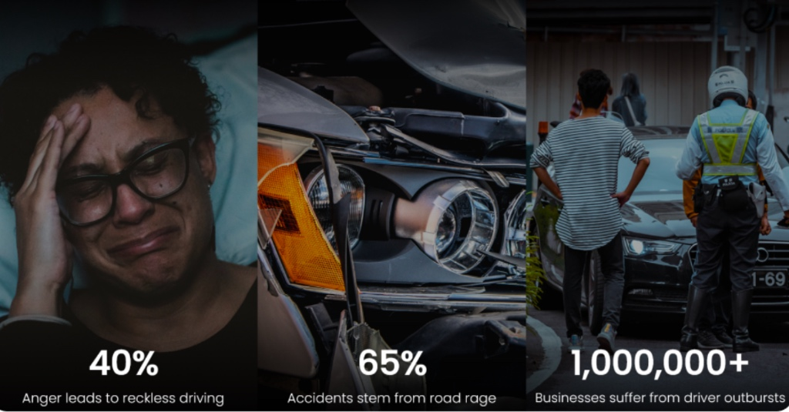
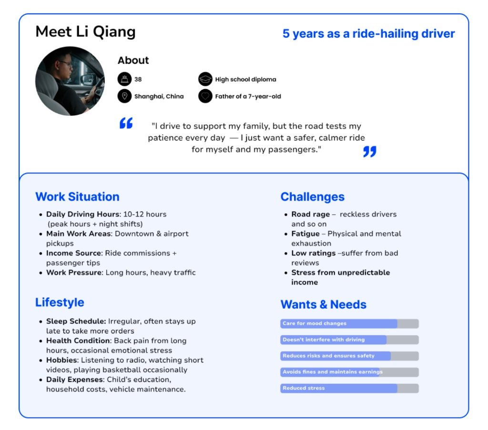
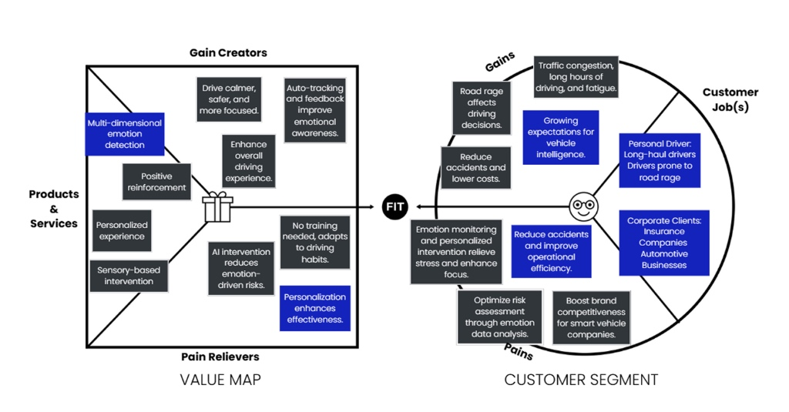
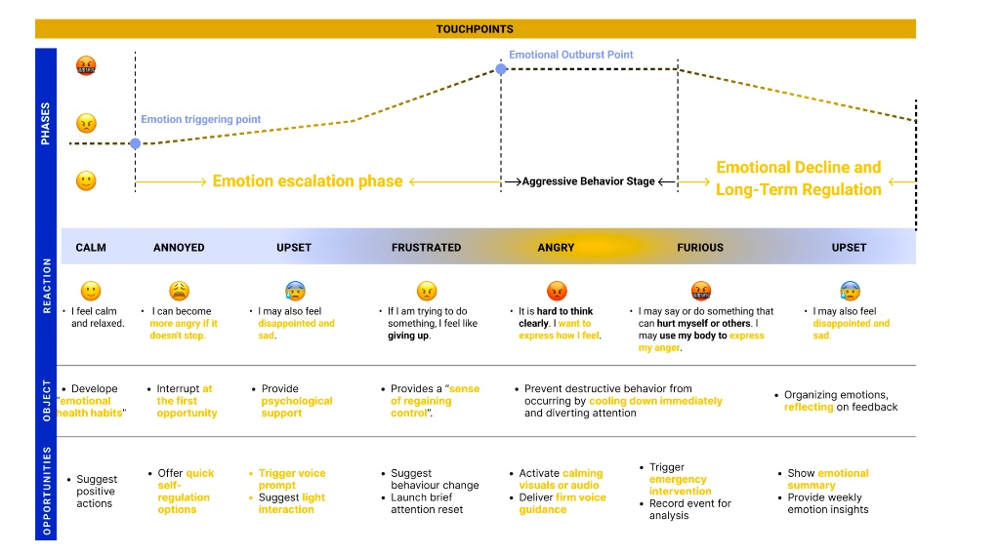
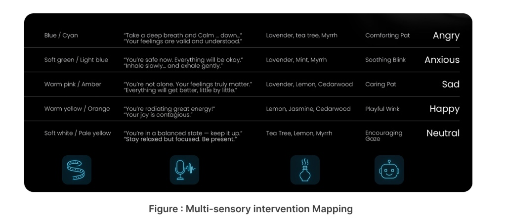
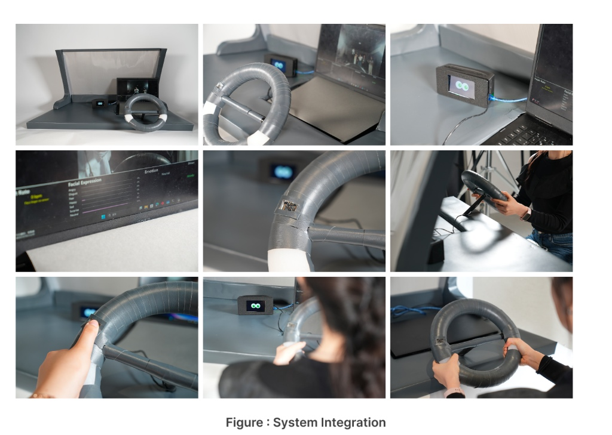
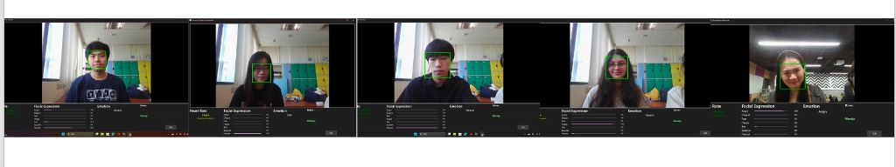
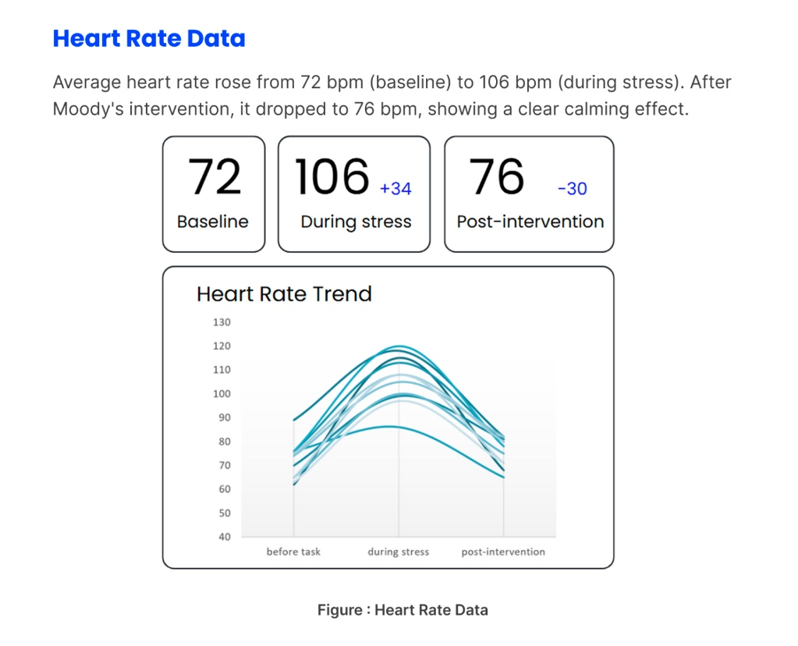

驾驶情绪：被忽视的安全隐患
在现代城市中，驾驶情绪波动不仅影响体验，更是生命安全的隐患。调研显示 40% 的愤怒导致激进驾驶，约 65% 的交通事故与“路怒症”相关。网约车司机面临日均 10-12 小时高强度工作，急需心理缓冲。
在现代城市中，驾驶情绪波动不仅影响体验，更是生命安全的隐患。调研显示 40% 的愤怒导致激进驾驶，约 65% 的交通事故与“路怒症”相关。网约车司机面临日均 10-12 小时高强度工作，急需心理缓冲。

深度访谈 45 位驾驶员，发现“被加塞”是核心诱因（26.3%）。相比生硬预警，60% 用户更偏向“伴侣式”反馈。通过价值主张画布与情绪旅程图，我们锁定了关键干预时机。



Moody 是一套“感知-决策-干预-反射”四层系统。利用红外监测微表情与 HRV 数据，通过视觉 (氛围灯)、听觉 (共情语音)、嗅觉 (精油) 进行多模态干预。

使用 Arduino 与 ESP32 控制硬件，Python 运行 DeepFace 进行情绪映射。干预延迟低于 150ms。


实机测试中，驾驶员平均心率从 106 bpm 降至 76 bpm，语音陪伴评分高达 4.64 / 5。
